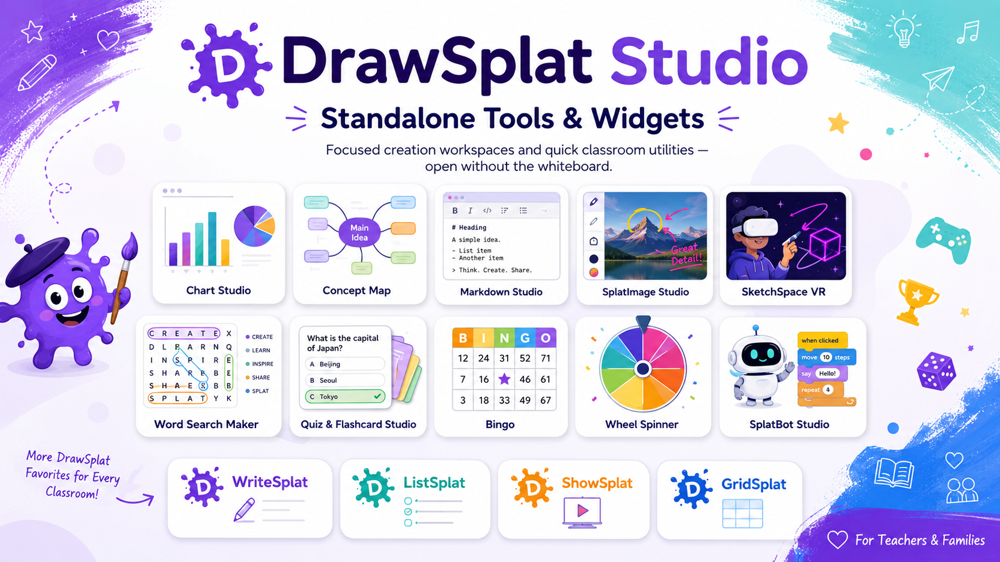
DrawSplat Studio
Tools and widgets that open without the whiteboard.
Use these focused pages directly from Studio. Tools are fuller creation workspaces; widgets are quick standalone classroom utilities.
Tools
Standalone creation workspaces
Build animated GIFs from image frames and export GIF, MP4, or WebM.
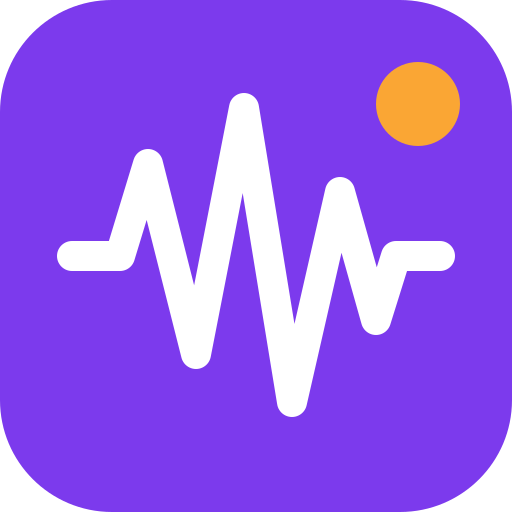
AudioSplat™Record, arrange, analyze, edit, and export private multitrack audio in your browser.
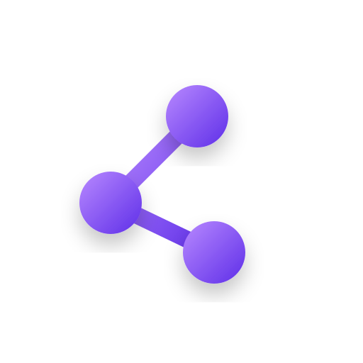
Big LinkCreate a large projected or printable URL card.
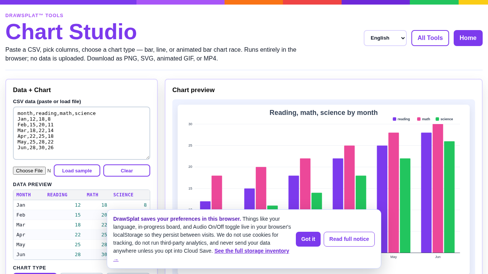
Chart StudioTurn CSV data into charts and export classroom-ready visuals.
CipherSplatEncrypt files, folders, and private text locally with authenticated AES-256 encryption.
Coloring BookPaint printable line-art pages in the browser.
 Concept Map
Concept MapCreate structured concept maps with templates and export options.
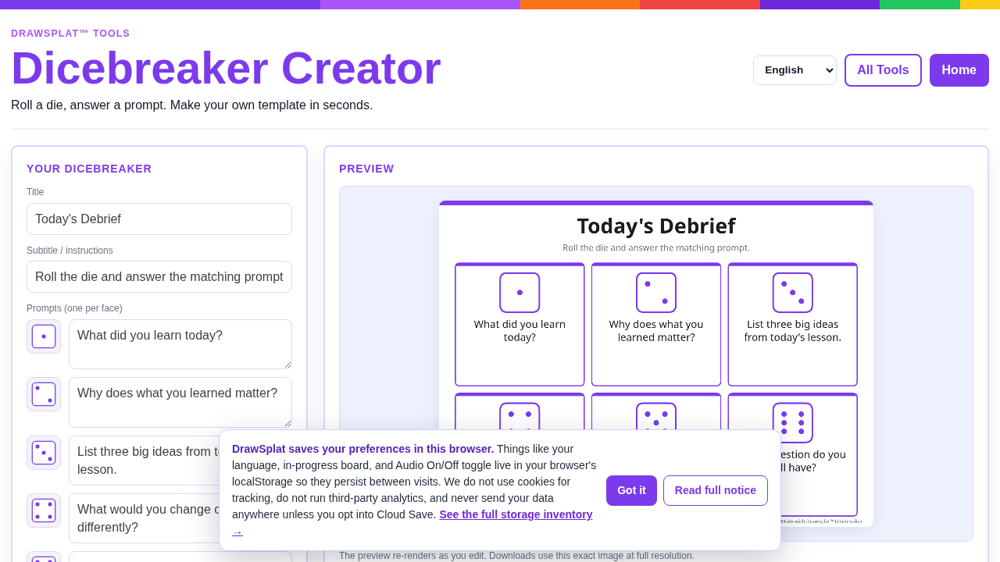
Dicebreaker CreatorCreate dice-based prompts and icebreakers.
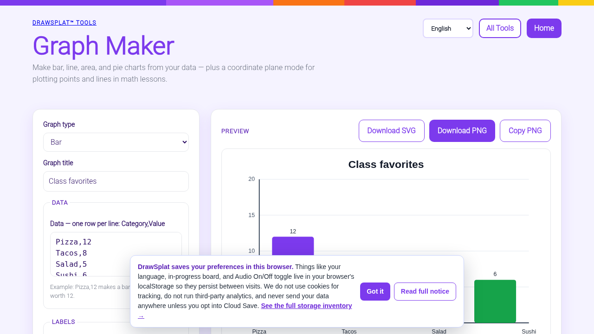
Graph MakerPlot points and lines on a coordinate plane.
Markdown StudioWrite, preview, and export classroom Markdown pages.
MediaSplat™Split, trim, join, and generate English subtitles with GPU assistance when available and CPU fallback. Burn captions locally.
 Mermaid Diagram
Mermaid DiagramCompose diagrams from Mermaid syntax with live preview.
 Picture Graph
Picture GraphBuild pictographs where each icon represents a set value.
PDFsplat™Open documents and images as PDFs, place and format text, sign and organize pages, present full screen or on a timed loop, and save PDF, PNG, JPG, WebP, or an offline WebDeck v5 locally.
Rubric BuilderCreate practical rubrics for projects and assignments.
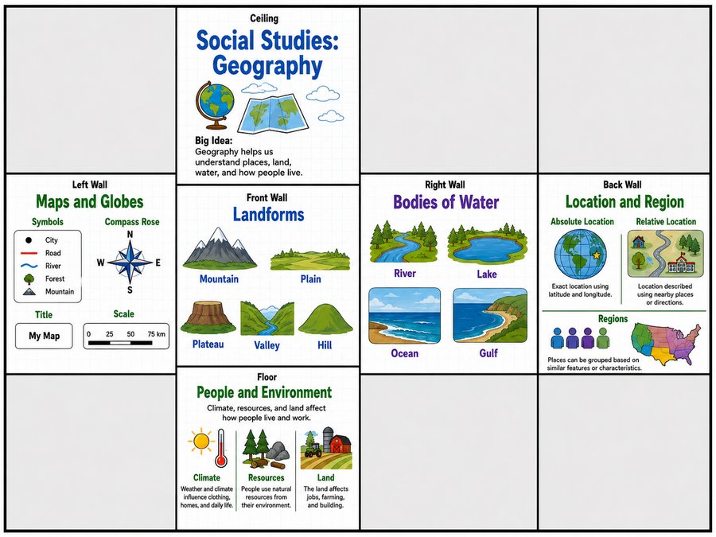
SketchSpace VROpen immersive classroom scenes and guided activities.
ImageSplat™Adjust photos with before/after previews; edit images with annotations, layers, crop, and export tools.
ClipSplat™Record or import video, add illustrated panels and image cards, cut sections, and export an MP4 for sharing.
VideoSplat™Record and edit video, bookmark moments with timeline markers, generate English captions, and export with automatic encoding fallback.
Word Search MakerGenerate word searches for vocabulary practice.
Widgets
Quick standalone utilities
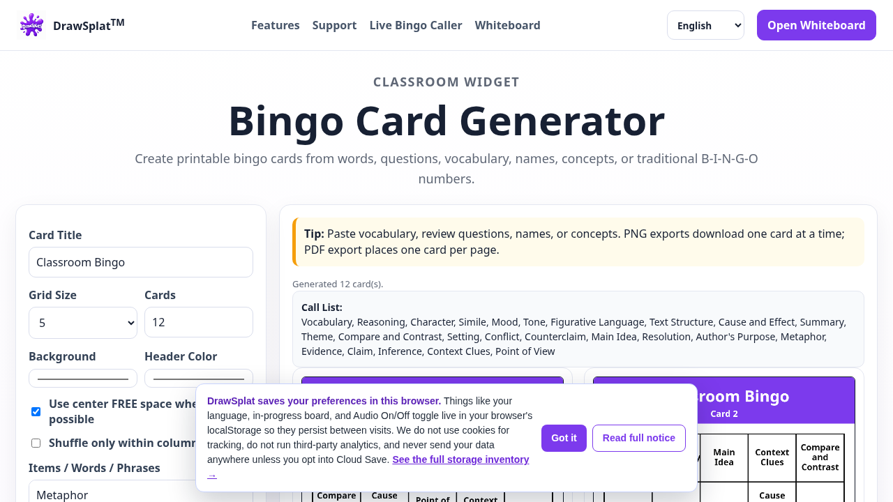
Bingo Card GeneratorCreate printable bingo cards.
Bingo CallerRun animated bingo calls.
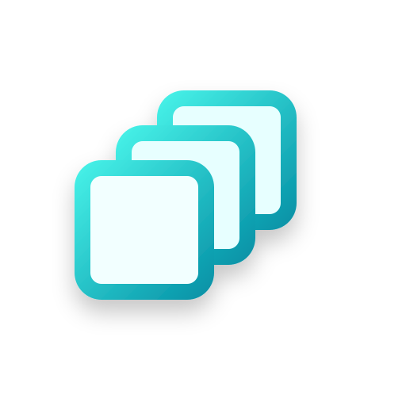
Brain SortGroup a messy task dump into an organized checklist.
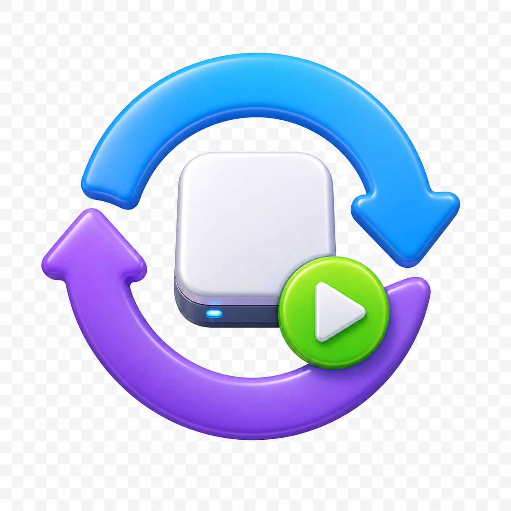
Clock WizardEstimate task time with phase breakdowns.
Coin FlipperFlip custom coins for probability and choices.
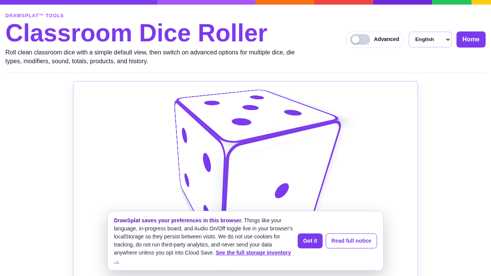
Dice RollerRoll classroom dice.
Draw & SketchOpen a quick freehand sketch pad.
Fortune WheelSpin a teacher-curated wheel.
Meme PuzzleBuild image-based puzzle activities.
MemeSplat™Create captioned memes locally.
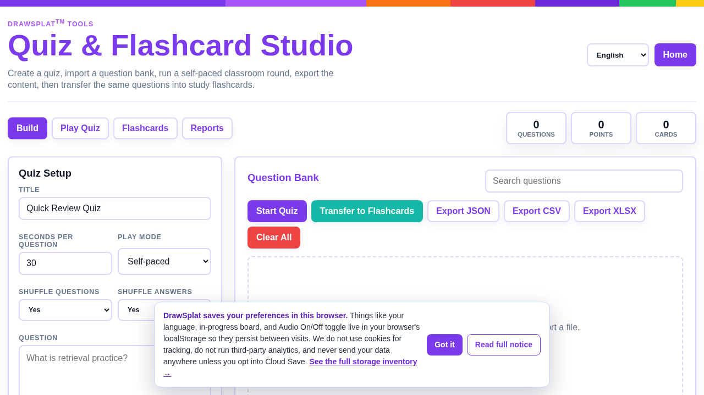
Quiz & Flashcard StudioBuild quizzes, team links, and printable flashcards.
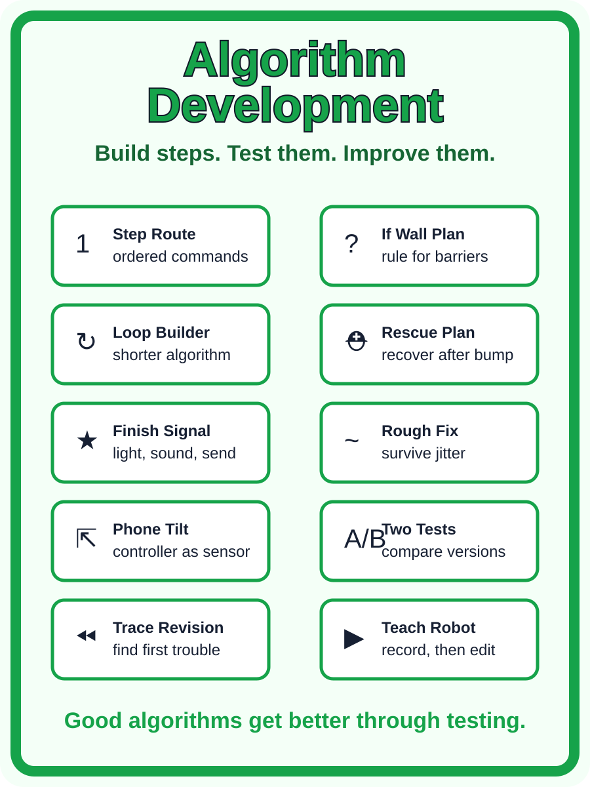
SplatBot StudioProgram a virtual classroom robot with blocks, word commands, missions, and shareable project files.
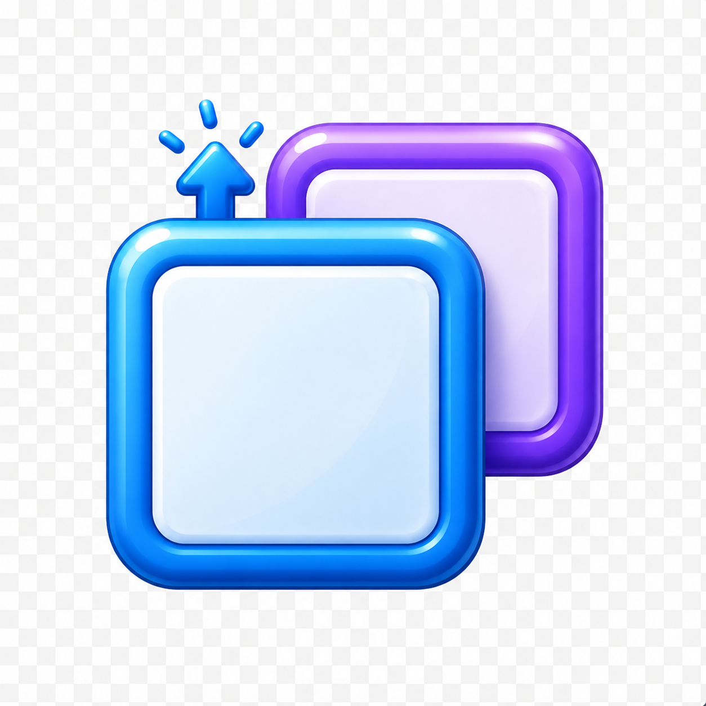
Step-SplatBreak tasks into bite-size steps.
Story WheelSpin story prompts.
ToneshifterRewrite text in a chosen tone.
Vibe CheckCheck the tone of a tricky message.
Wheel SpinnerDrop in a list and spin for a pick.